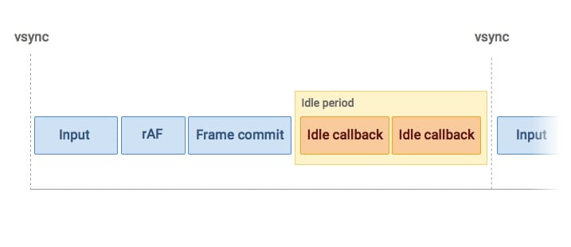

Reunderstanding the Event Loop
Preface
Recently, when asked about Microtask and Macrotask, I realized that my understanding of the Event Loop was lacking. I researched several articles, but none provided a thorough explanation—until I came across this talk, which finally clarified everything for me:
This article reflects my understanding. Since I found the W3C’s original definitions difficult to understand, my understanding mainly comes from the video above and other articles that weren’t as comprehensive, so it might not be entirely accurate.
PS: Please note that there is no official definition for the term Macrotask. The W3C simply refers to it as a Task. However, I’ll continue to use Macrotask since that’s the term most people seem to use.
Event Loop
To understand the Event Loop, you first need to understand that JavaScript is a single threaded language. The reason it was designed as a single threaded language is quite clear: one of JavaScript’s primary functions is DOM manipulation. If you have experience with other programming languages, you might know how complicated file I/O handling can be in languages that support multiple threads/processes. If you’re unfamiliar with this, you can look up the keyword File lock between threads and processes.
The Event Loop is a solution designed to simulate multitasking in a single threaded environment. The advantage of single-threading is that it simplifies programming, but the downside is that it can only handle one task at a time. For example, imagine a convenience store with only one clerk. When the clerk is microwaving food, they can only wait idly and cannot perform other tasks like checking out customers. You might think, “Wait a minute, while the food is in the microwave, they can do other tasks after setting the timer, right?” Exactly. Think of microwaving food as an async task like fetch, and checking out customers as a sync task like DOM manipulation. The clerk is still just one person, but with some reasonable scheduling, they can achieve a multitasking-like effect. The Event Loop is designed to make this kind of simulated multitasking possible.
The steps for the browser to display a webpage are shown in the diagram below(Source):

The key point to note here is only the first step, which is JavaScript. The other steps require a separate article to explain fully; the remaining steps will be collectively referred to as Rendering. Essentially, the Event Loop is about breaking tasks into smaller pieces to ensure that JavaScript isn’t blocked by tasks that aren’t related to it, such as networking. These other tasks are handled by different threads in the browser, so while a download is in progress, JavaScript can perform other work instead of waiting for the other threads to finish. However, this is a form of simulated multitasking, so if one task consumes too many resources (such as an infinite loop), it can still block other tasks.
The Event loop flowchart(CC BY-SA):

The diagram shows that in addition to the JS Thread, the browser also has Timer, Event, Network, and UI Threads. Macrotask queue primarily includes tasks generated by these threads in addition to the JS code. For example, if a click callback is added to a certain Element in the JS code, the Event thread will enqueue a task when the user clicks that Element. The browser then selects a task from the Macro task queue to execute during each Event loop tick (each iteration of the loop is called a tick). In theory, for the sake of user experience, Event-related tasks are prioritized, and after that, all tasks in the Microtask queue are executed. Let’s look at an example:
console.log(1)
setTimeout(function() {
console.log(2);
});
requestAnimationFrame(function () {
console.log(3);
requestAnimationFrame(function () {
console.log(4);
});
});
requestIdleCallback(function () {
console.log(5);
});
new Promise(function(resolve, reject) {
console.log(6);
resolve(7);
}).then(function(val) {
queueMicrotask(function () {
console.log(8);
});
console.log(val);
});
console.log(9);
Here are who the Event loop would do:
- The JS engine parses the code, adds it to the Macrotask queue, and starts executing it.
- The first line is executed, printing 1.
- The
setTimeoutfunction is executed, adding its callback to the Macrotask queue. - The
requestAnimationFramefunction is executed, adding its callback to therequestAnimationFramequeue. - The
requestIdleCallbackfunction is executed, adding its callback to therequestIdleCallbackqueue. - The
new Promiseis executed, printing 6. Note that this part is synchronous, not asynchronous. - The
thenmethod is executed, adding its callback to the Microtask queue. - The last line is executed, printing 9. At this point, the task in the Macrotask queue from step 1 has finished executing.
- Next, all tasks in the Microtask queue are executed, including the task added in step 4, printing 6. At this point, all tasks in the Macrotask queue have been executed.
- The tasks in the
requestAnimationFramequeue are executed, printing 3, and anotherrequestAnimationFramecallback is added to therequestAnimationFramequeue. - Rendering begins.
- At this point, it depends on whether the JS thread is busy. If it is busy, all tasks in the
requestIdleCallbackqueue will be ignored; otherwise, they will be executed. Therefore, there are two possible outcomes: the tasks are either executed in this tick or deferred to the next tick. - All steps in this tick have now been completed. Moving to the next tick, a task from the Macro task queue is executed, printing 2.
- The task that was added to the
requestAnimationFramequeue in step 10 is executed. - If the tasks in the
requestIdleCallbackqueue were not executed in step 12, they will be executed at this point.
The author obtained several different results during testing:
1, 6, 9, 7, 8, 3, 5, 2, 41, 6, 9, 7, 8, 3, 2, 5, 41, 6, 9, 7, 8, 2, 5, 3, 4
The reason for the different results is that requestIdleCallback and requestAnimationFrame are both unstable APIs. The steps mentioned above are just theoretical; in reality, their execution is highly dependent on the current environment. requestAnimationFrame will only be executed when there is a need to render, and sometimes the screen doesn’t change or update, so it won’t be executed during that tick. requestIdleCallback is only executed if there is idle time available in that tick.
requestAnimationFrame(rAF) specific execution timing(Source)：

requestIdleCallbackspecific execution timing(Source)：

UI thread and JS thread
Although the UI thread and the JS thread are independent of each other, JS will not execute while the UI is updating, and conversely, the UI thread will not render while JS is executing. This prevents unpredictable conflicts, such as JS modifying the DOM while the UI is being updated.
Fetch
I mentioned earlier that Network is another thread, so XMLHttpRequest is a Macrotask, while fetch uses Promises, which are Micro tasks. This might seem contradictory, but actually, fetch is just a wrapper around XMLHttpRequest. The XMLHttpRequest response is indeed a Macrotask, but fetch returns a Promise from that. You can understand this better by referring to a common polyfill(Source)：
function Fetch(url, options) {
return new Promise(function(resolve, reject) {
var xhr = new XMLHttpRequest();
xhr.onload = function() {
// Check for HTTP success (status in the range of 200 to 299)
if (xhr.status >= 200 && xhr.status < 300) {
resolve(new Response(xhr.responseText, { status: xhr.status }));
} else {
// Create a new Error object with more information
var error = new Error(xhr.statusText);
error.response = new Response(xhr.responseText, { status: xhr.status });
reject(error);
}
};
xhr.onerror = function() {
reject(new Error('Network error'));
};
// open(method, url, async)
xhr.open(options.method || 'GET', url, true);
// We must call setRequestHeader() after open(), but before send().
for (var header in options.headers || {}) {
xhr.setRequestHeader(header, options.headers[header]);
}
xhr.send(options.body || null);
});
};
In-practice Recommendations
- Use
setTimeoutor other Macrotasks for executing critical code that you don’t want to be affected by other tasks in the same tick (frame). - Use
queueMicrotaskor other Micro tasks for less critical and smaller pieces of code. - Use
requestAnimationFramefor tasks related to rendering, such as DOM manipulation. - Use
requestIdleCallbackfor non-essential tasks, such as analyzing user behavior.